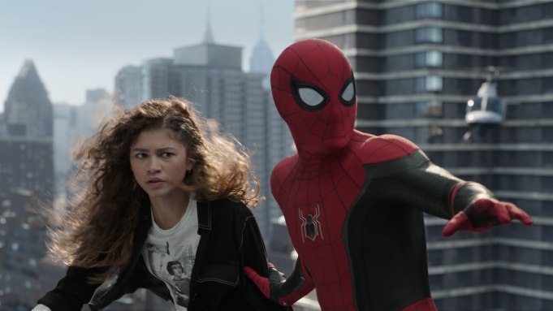

NOW SHOWING MOVIES


- 
TITLE: SPIDER MAN NO WAY HOME
STARRING: Tom Holland Zendaya Benedict Cumberbatch Jacob Batalon Jon Favreau Jamie Foxx Willem Dafoe Alfred Molina Benedict Wong Tony Revolori Marisa Tomei Andrew Garfield Tobey Maguire
Age:14
After Quentin Beck frames Peter Parker for murder and reveals his identity as Spider-Man,[N 1] Parker, his aunt May, girlfriend MJ, and best friend Ned Leeds are interrogated by the Department of Damage Control. Lawyer Matt Murdock gets Parker's charges dropped, but the group continues to grapple with negative publicity. After Parker, MJ, and Ned's MIT applications are rejected, Parker visits the Sanctum Sanctorum to ask for help from Stephen Strange, who suggests a spell that would make people forget Parker is Spider-Man. While Strange casts the spell, Parker requests alterations to allow MJ, Ned, and May to retain their memories. The interruptions corrupt the spell, but Strange manages to contain it and makes Parker leave. Parker attempts to convince an MIT administrator to accept MJ and Ned's applications, but is suddenly attacked by Otto Octavius. Octavius rips Parker's nanotechnology from his Iron Spider suit, which bonds with his mechanical tentacles and allows Parker to disable them. As Norman Osborn appears, Strange captures Octavius and places him in a holding cell in the Sanctum alongside Curt Connors. Strange explains to Parker that the spell summoned people from other parts of the multiverse who know Spider-Man's identity, and orders Parker, MJ, and Ned to capture the remaining people. As Parker captures Max Dillon and Flint Marko, Osborn reclaims control of himself from his split Green Goblin personality. He goes to a F.E.A.S.T. building, where he is treated by May before Parker retrieves him. While discussing their battles with Spider-Man, the captured villains realize that some of them were pulled from their universes just before their deaths. Strange prepares a spell contained within a box that will send the villains back to their respective universes to meet their fates, but Parker argues that they should first cure their powers and insanity, hoping that doing so would prevent their deaths upon their return. Parker steals the boxed spell, traps Strange in the Mirror Dimension, and takes the villains to Happy Hogan's apartment. He successfully cures Octavius with Stark Industries technology, but Osborn's Goblin persona takes control and convinces the uncured villains to betray Parker. As Dillon, Marko, and Connors escape, Osborn stabs May, who tells Parker that "with great power, there must also come great responsibility" before dying.